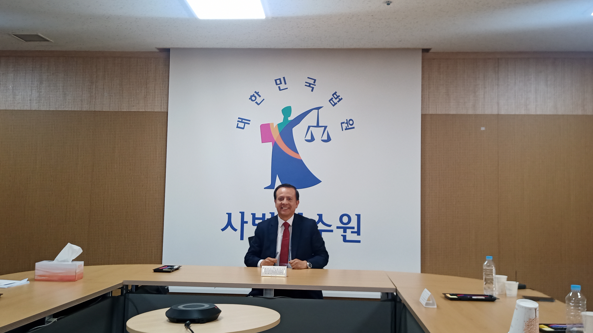

Inteligencia Artificial & Transformación Digital
Líder de Transformación Digital y Gestión de Proyectos con más de 20 años de experiencia en Gobierno Digital, especializado en la integración de IA para la modernización del sector público.
Perfil Profesional
Profesional con más de 20 años de experiencia en la gestión, liderazgo y coordinación de proyectos de Tecnología de la Información y Gobierno Digital. Experto en la implementación de sistemas de interoperabilidad y el desarrollo de plataformas de servicio al ciudadano en el sector público, aplicando metodologías PMI (PMBOK) y Ágiles (Scrum).
Actualmente me especializo en la integración de Inteligencia Artificial (IA) para la optimización de procesos y la modernización de la gestión pública. He demostrado éxito en la implementación del Expediente Judicial Electrónico (EJE) y en la gestión de proyectos de interoperabilidad que integran al Poder Judicial con 11 entidades clave. También he liderado proyectos de género y cooperación internacional, coordinando el Proyecto de Mejora de la Justicia de Paz y Violencia de Género con el apoyo de KOICA y PNUD.
GovTech & Interoperabilidad
Arquitectura de integración entre entidades públicas, EJE y modernización de trámites ciudadanos bajo estándares de seguridad y gobernanza digital.
IA & Data Strategy
Maestría en IA en curso. Implementación de modelos LLM, analítica predictiva y gobernanza de datos para optimizar procesos judiciales y públicos.
Liderazgo Ágil & PMI
Gestión de portfolios bajo PMBOK 7, Scrum Master/PO certificado y liderazgo de equipos multidisciplinarios en proyectos de alta complejidad.
Stack Tecnológico & Metodológico
Capacidades alineadas a estándares internacionales y arquitectura moderna.
Trayectoria Profesional
Poder Judicial del Perú
- Lideré la gestión e implementación del Expediente Judicial Electrónico (EJE)
- Gestioné proyectos de interoperabilidad exitosos integrando PJ con 11 entidades clave
- Lideré el Proyecto del Certificado Electrónico de Antecedentes Penales (CAPe)
- Coordinador del Proyecto de Mejora de Justicia de Paz y Violencia de Género (KOICA/PNUD)
- Aseguré cumplimiento normativo y gobernanza en todos los proyectos
Servicio de Administración Tributaria de Lima - SAT
- Lideré y gestioné el Proyecto GEPSIS
- Implementé el Sistema de Asuntos Judiciales (SAJU) para Gerencia de Impugnaciones
Consultora Teamsoft
- Proyectos para América Móvil Perú SAC
- Implementación de requerimientos funcionales Ventas/PostVentas
- Despliegue de sistemas en Centros de Atención al Cliente (CAC)
Poder Judicial del Perú
- Lideré proyectos en el Sistema Integrado Judicial (SIJ)
- Implementé sistemas de apoyo a justiciables a nivel nacional
- Gestión de despliegue funcional y técnico a nivel nacional
ABS COMPUTER S.A.
- Lideré y gestioné infraestructura tecnológica para cartera de clientes corporativos
Educación & Certificaciones
Formación continua en IA, gestión de proyectos y transformación digital.
Dashboard de Impacto Público
Visión Tecnológica 2025-2030
IA Generativa Ciudadana
Despliegue de asistentes virtuales con LLMs seguros para orientación legal y trámites automáticos.
Arquitectura Zero-Trust
Migración de infraestructura pública hacia modelos de seguridad verificada continua e identidad descentralizada.
Data Spaces Públicos
Ecosistema interoperable de datos gubernamentales con gobernanza ética, analítica predictiva y transparencia auditable.
Reconocimientos & Logros
Premio Buenas Prácticas en Gestión Pública
Cooperación Público-Pública: Interoperabilidad y EJE en casos de violencia de género.
📄 Ver constanciaReconocimiento por Destacada Labor
Servidor Público 2023 y 2024 por desempeño sobresaliente.
📜 Ver resoluciónReconocimiento Implementación Interoperabilidad
EJE aplicado a casos de Violencia Contra la Mujer.
📜 Ver resoluciónViaje Oficial a Corea del Sur
Pasantía de fortalecimiento de capacidades para respuesta a Violencia de Género.
🌏 Ver publicaciónCo-autor Registro Nacional de Condenas (RNC)
Registro oficial de software ante INDECOPI (Exp. 2550-2019).
🔍 Ver registroRadar Multidimensional de Modelos IA
Análisis comparativo de capacidades de LLMs aplicado al sector público.
📊 Ver modeloContacto Directo
¿Interesado en colaborar en proyectos de transformación digital o IA?
Estoy disponible para consultoría, arquitectura de sistemas, liderazgo de proyectos GovTech y mentoría técnica.